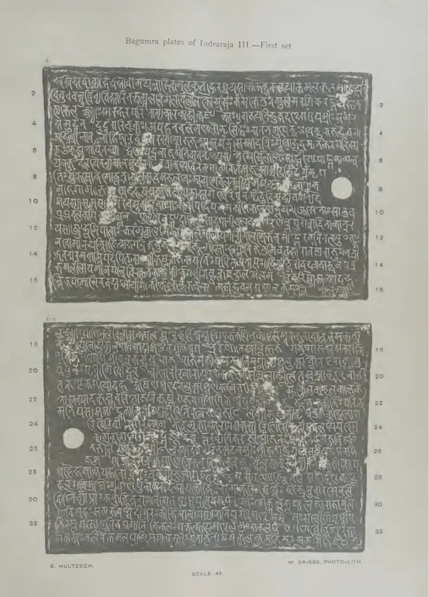
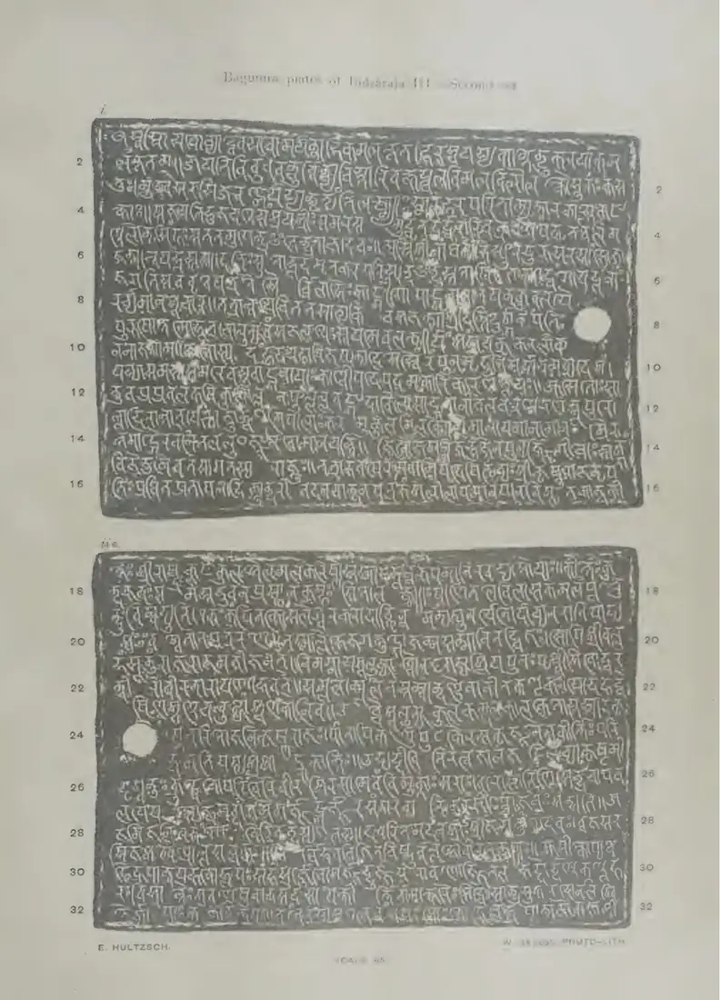
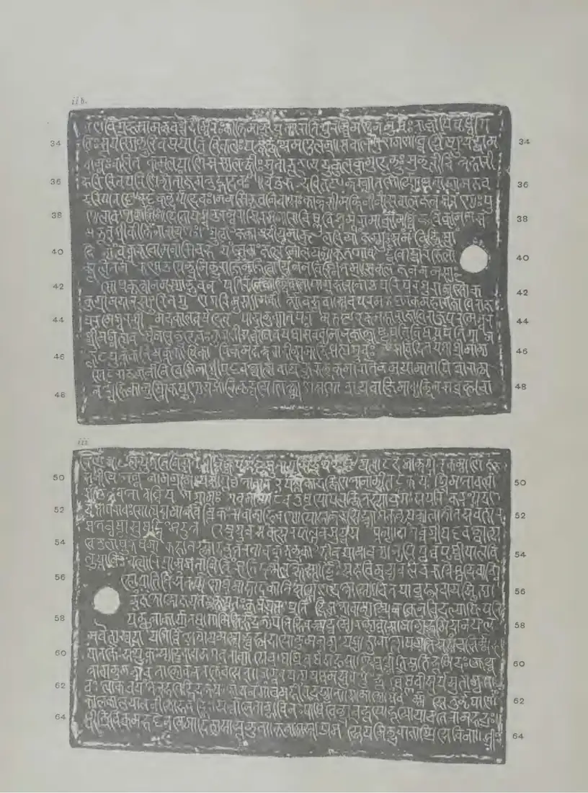

Two grants of Indrarâja III; Śaka-Sainvat 836
TWO GRANTS OF INDRARAJA III. ;
SAKA-SAMVAT 836.
BY D. R. BHANDARKAR, M.A.
These two epigraphic documents were first brought to the notice of the students of Indian antiquities by the late H. H. Dhruva, who published a transcript of them with his remarks in the Zeitschr. D. Morg. Ges. Vol. XL. p. 322 ff. They were afterwards edited with lithographs by Dr. R. G. Bhandarkar, with a translation by Mr. (now Prof.) S. R. Bhandarkar, in the Journ. Bo. Br. R. As. Soc. Vol. XVIII. p. 253 ff. About three years ago, when Prof. Hultzsch first thought of having the inscriptions re-edited in this Journal, no trace whatever of them could be found, and it was on a chance visit to the State Museum at Baroda in 1903 that I saw the plates exhibited there. On my informing Prof. Hultzsch of their whereabouts, he asked Rai Bahadur Venkayya to obtain them on loan through the Resident at Baroda from the Curator of the Baroda State Museum, and I re-edit the inscriptions at the suggestion of Prof. Hultzsch, and from the excellent ink-impressions supplied by Rai Bahadur Venkayya.
[Along with the two sets of plates, two seals were received from the Resident at Baroda in December 1903. As the seals had been detached from the plates, it was not possible to ascertain which seal belonged to which set. But before returning the plates and seals on the 7th December 1904, I put down some notes about them, of which the following is a copy.
[The plates measure on an average 13" by 9. The rings bearing both the seals had been cut before they were received in my office. The larger of the two seals measures about 3" by 2. The ring whose ends are secured at the bottom of the seal is 3 in diameter and thick. The seal bears, in relief on a countersunk surface, as the principal figure, an image of Garuđa—whose wings are distinctly seen—squatting on a seat which is probably meant to consist of two serpents. These appear to entwine his waist and to terminate in his hands, each of which is holding a hood. What looks like his sacred thread is perhaps a third serpent. The Garuđa faces to the full front and has on his proper right a representation of Gaṇapati in the upper corner, lower down a chaurî, and below it a lamp. On the proper left in the upper corner is a goddess riding on a lion, and below the lion a svastika surmounted by a chaurî. On each side of the head of Garuđa is a circle which may be meant for the sun and moon. Below the squatting Garuđa is an inscription which is not quite distinct, but which seems to be श्रीमन्नित्यवर्षदेवस्य. Along the margin of the seal is a border of various indistinct emblems, among which a liṅga and an elephant-goad are recognisable. The emblems on the smaller seal, which measures about 1 by 1, are also cut in relief on a countersunk surface, but are not quite distinct. The central figure is Garuđa, squatting, as in the bigger seal, apparently on a couch consisting of two serpents, which seem to entwine his waist and to terminate in his hands. Each of the hands of Garuđa appears to hold a hood. What looks like his sacred thread may be a third serpent. To his proper right at the upper corner is a projection which may stand for Gaṇapati, and below it is a lamp stand. To the proper left at the upper corner is another
1 See above, p. 18, note 3.
2 I.e. Sarvabandhu.
projection, which is perhaps intended to represent a goddess. Below the goddess is a lamp stand above a svastika. The ring whose ends are secured at the bottom of the smaller seal measures 3" in diameter and in thickness. Two sets of impressions of each of the two inscriptions were sent to Mr. D. R. Bhandarkar in August 1903.—V.V.]
As regards the find-spot of the plates, H. H. Dhruva, who first edited them, says:—“On the 6th of July 1881, as a Dubla servant of Mulji Khushal, Patel of Bagumrâ, was furrowing the earth with the plough in his field, the ploughshare drew out of it these plates.” This clearly shows that the plates were found at Bagumrâ, and consequently we must, as was first pointed out by Prof. Kielhorn,1 speak of them as Bagumrâ, and not as Nausâri, charters of A.D. 915.
Each of the two sets consists of three copper-plates, which are, to judge from the impressions, about 13" long and 9" broad. The inscription is engraved on the inner sides of the first and third plates, and on both sides of the second plate. The engraving is clear and well executed. The characters belong to the northern class of alphabets. For some of the forms of individual letters attention may be drawn to g in gatasya and svarygañ, l. 13; to ñ in lâñchhana, l. 8, and râjñah, l. 13; to m in °m=anyat=pu°, l. 17, °m=ánandi, l. 37, and grâmakúta, l. 46; to bh in bhúpah, l. 28; and to s in saintarppaná°, l. 57, so far as the first record is concerned; and to k in kánt-éndu-, l. 1; to kh in šañkha, l. 29; to j in saras-āmbhôjâ, l. 5, and jagati, l. 7; and to bh in kaustubha, l. 2, so far as the second record is concerned. The language is Sanskrit throughout. In respect of orthography, the following points may be noticed. The letter b is throughout denoted by the sign for v; consonants are doubled after r; visarga has been (permissibly) omitted once before the following sth in vaksha-sthala, l. 2 of both grants; n has been substituted for ñ in kânchî, l. 11 of No. II.; visarga followed by s has been at least thrice changed to that letter in Raṇavigrahas=samabhava°, l. 33, °palakshitas=sôdraṅgah, l. 51, and °lakshais=sârddhaih, l. 55 of the second record; anusvâra followed by a nasal has been twice changed to that letter in sammânita, l. 18 of No. I. and l. 20 of No. II., and in gôp-âṅganânân=nayana-, l. 6 of No. I.; the dental nasal has been used instead of an anusvâra before s in šansati, l. 25 of No. I. and l. 27 of No. II. Lastly, the same word is spelt lâñchhana in No. I. l. 8, but lâñchhana in No. II. l. 9.
Each of these two records registers the grant of a village to a Brâhmaṇa, made by the Râshṭrakúta king Indra III. or, as he is described in lines 43-45 of No. II., ' the P.M.P., the prosperous Nityavarshanarèndradéva, who meditated on the feet of the P.M.P., the prosperous Akâlavarshadéva, ' i.e. his grandfather Kṛishṇa II. Indra III. had, when the grants were made, gone to Kurundaka from his capital Mânyakhêta for the paṭṭabandha2 festival. On that occasion he had himself weighed against gold, and, without coming out from the pan, gave away, together with twenty lakhs and a half of drammas, Kurundaka and other villages, granted afresh four hundred villages resumed by previous rulers, and finally bestowed the village of Tenna, according to No. II., on a Brâhmaṇa of the Lakshmaṇa gôtra, a student of the Vâji-Mâdhyandina śâkhâ, and named Siddhapabhaṭta, the son of Śrî-Vennapabhaṭta, originally of Pâṭaliputra; and the village of Umvarâ (or Umbarâ), according to No. I., on a Brâhmaṇa of the same gôtra and student of the same śâkhâ as the above grantee, but named Prabhâkarabhaṭta, the son of Râṇapabhaṭta. The charters are dated, in words, on the 7th tithi of the bright fortnight of Phâlguna of the Yuva-samvatsara, the Śaka year 836 (expired), which corresponds to the 24th February A.D. 915.
After the introductory ôm svasti and the opening verse invoking the protection of Vishnu and Śiva with which almost all the Râshṭrakúta grants begin, we have verse 2 in praise of
1 See above, Appendix to Vol. VII. p. 15, note 5.
2 For the meaning of this word see above, Vol. VII. p. 27, note 2.
the god Krishna. In the verse following we find Indrarājadēva (III.), the royal grantor of the charters, compared to the god Upēndra (Vishnu). In verse 4 we are informed that the god Brahman sprang from the water-lily in the navel of Vishnu, from Brahman his son Atri, from Atri the Moon, and from the Moon the dynasty of the Yadus, where Krishna was born. In the next verse we are told that there arose king Dantidurga in the Sātyaki branch of the Yadu dynasty, to whom of herself repaired the goddess of sovereignty of the Chālukya family. This means that Dantidurga was the first Rāshṭrakūṭa king who defeated the Chālukyas and made himself master of their dominions. From verse 6, if we notice the double-entendre clearly intended, we learn that Dantidurga first reduced the lowermost, i.e. southern, country, then turned his arms against the Madhyadēsa, and finally conquered the city of Kāñchi. According to an inscription in the Daśāvatāra cave at Elurâ,1 Dantidurga subdued the rulers of Kāñchi, Kalinga, Kôsala, Śrīśaila, Málava, Láṭa, Tañka, and so forth. If we are right in understanding verse 6 as we have done, Dantidurga first gained victories in the South and conquered the kings of Śrīśaila, Kalinga, and so forth, then turned to the central part of India and subjugated the princes of Kôsala, Málava, Láṭa, and so forth, and finally came back again to the South and vanquished the lord of Kāñchi.
Verse 8 tells us that after Dantidurga his paternal uncle Krishnarāja (I.) came to the throne. The next verse makes mention of his son Nirupama(-Dhruva), but omits the name of his elder brother Gôvinda II., probably because the author of the inscription wanted to give a direct genealogy of the royal grantor, with reference to whom Gôvinda II. was a collateral prince, while he mentioned the name of Dantidurga as the latter was the founder of the dynasty. But by no means can this omission be taken as favouring the view that Gôvinda II. did not reign. I have elsewhere adduced reasons for dissenting from this view;2 and in support of my position may now be stated the incontrovertible fact that the Dhuliâ copper-plate grant3 of Gôvinda II.'s nephew and feudatory Suvarṇavarsha-Karka distinctly refers itself to his reign, and gives the date Śaka 701, when we must consequently suppose Gôvinda II. to have been alive and wielding supremacy. Verse 10 informs us that Nirupama(-Dhruva) won two white parasols in battle, one from the lord of Kôsala and the other from the king of the North. Who these princes were we have no means to determine. But it looks tempting to identify the king of the North either with the Indrāyudha mentioned in the Jaina Harivaṁsa, or with Chakrāyudha, the ruler of Kanauj and contemporary of Dharmapâla of the Pâla, and of Gôvinda III. of the Rāshṭrakūṭa, dynasty.4
Verse 11 says that from Nirupama(-Dhruva) sprang Jagattuṅga(-Gôvinda III.), who, in his turn, begat Śrīvallabha(-Amôghavarsha I.). The next verse tells us that Amôghavarsha
1 Arch. Sure. West. Ind. Vol. V. p. 88.
2 Journ. Bo. Br. R. A. S. Vol. XX. p. 133 f.
3 Above, Vol. VIII. p. 183.
4 In an unpublished grant of Amôghavarsha I. in the possession of my brother Prof. S. R. Bhandarkar, two princes of the names of Chakrāyudha and Dharma are mentioned as having gone to the Himálayas to do homage to Gôvinda III. who had gone thither on an expedition of conquest. It can hardly be seriously doubted that Dharma is Dharmapâla, the second prince of the Pâla dynasty, and that Chakrāyudha is the same as the Chakrāyudha of the Bhâgalpur grant, whom Dharmapâla restored to his lost throne. Prof. Kielhorn (Nachrichten von der K. Ges. d. Wiss. zu Göttingen, 1905, p. 303) has already identified this Chakrāyudha with the Chakrāyudha of the Gwalior inscription, who was conquered by Nāgabhaṭa. Nāgabhaṭa again was a contemporary of Gôvinda III. (Journ. Bo. Br. R. A. S. Vol. XXI. p. 422, note 2). We have thus four princes, viz. Gôvinda III., Nāgabhaṭa, Chakrāyudha and Dharmapâla, who were contemporaries. We know from Rāshṭrakūṭa records that Gôvinda III. reigned from A.D. 794 to 813. We must, therefore, suppose Dharmapâla to have flourished about this time. As this synchronism was not known before, it was but right to assign Dharmapâla to A.D. 861, the date of the Pathārī inscription referring itself to the reign of the Rāshṭrakūṭa prince Parabala (Nachrichten von der K. Ges. d. Wiss. zu Göttingen, 1901, p. 525 f.). But now we see that this date would be rather too late for Dharmapâla. Besides, there is nothing to show that this Parabala is, as a matter of fact, identical with Parabala, the father-in-law of Dharmapâla.
I. raised the glory of the Raṭta sovereignty immersed in the ocean of the Chalukyas and thereafter assumed the epithet Viranārāyaṇa. If we read between the lines, we cannot fail to notice that the Rāshṭrakūṭa sovereignty had been shaken by the Chalukyas of Vēngī to its very foundations in the early part of Amôghavarsha's reign. The Chalukya contemporary of Amôghavarsha I. was Narēndramṛigarāja-Vijayāditya II.1 who, in an Eastern Chalukya record, is represented to have fought, during twelve years, by day and night, a hundred and eight battles with the armies of the Gangas and the Raṭtas. The latter can be no other than the Rāshṭrakūṭas of Mālkhēd, and it thus appears that Narēndramṛigarāja-Vijayāditya II. was a powerful king. We can, therefore, very well understand that he might have for a time eclipsed the glory of the Rāshṭrakūṭas. Amôghavarsha I., however, was by no means slow to retrieve his lost reputation, and seems to have wreaked a terrible vengeance upon the Chalukyas, whom, as verse 13 informs us, he destroyed, just as a man burns chick-pea plants, the stalks of which have been pulled out by the root. That he inflicted a severe defeat on the Eastern Chalukyas can also be seen from the Cambay and Sānglī charters,2 in which he is said to have gratified the god Yama with unprecedented morsels of cakes which were the Chalukyas. Verse 13 incidentally gives us the information, if my interpretation is correct, that the Chalukyas whom Amôghavarsha I. vanquished had devastated Stambapura, which is the same as Tāmralipta, identified with the modern Tamlūk, the head-quarters of the subdivision of the same name of the Midnāpur district, Bengal.
From Śrīvallabha(-Amôghavarsha I.), who was a comet of destruction to the Chalukya family (v. 14), sprang Kṛishṇarāja (II.), whose fights with the Gūrjaras used to be still remembered by old men, as we are informed in verse 15. I have elsewhere pointed out that the Gūrjaras, with whom the Rāshṭrakūṭas were often at war, ruled over Northern India and had their capital at Mahōdaya or Kanauj, and consequently the Gūrjara prince defeated by Kṛishṇarāja II. (A.D. 888-911) must have been Mahēndrapāla (A.D. 899-907), the patron of the poet Rājasēkhara.
Kṛishṇarāja II. had a son of the name of Jagattuṅga (v. 16), who married Lakshmī, the daughter of Raṇavigraha, the son of Kokkalla of the Haihaya, i.e. Kalachurī, dynasty (vv. 17-19). It is worthy of note that Raṇavigraha is here called Chēd-īsvara, i.e. lord of Chēdi. The same fact is hinted by a verse in Jahlaṇa's Sūktimuktāvali, quoted by Dr. Bhandarkar in his paper on the Karhād plates of Kṛishṇa III.3 which purports to say that of rivers the Narmadā, of kings Raṇavigraha, and of poets Surānanda were the ornaments of Chēdi. The name Raṇavigraha does not occur in the list of the names of the Kalachuris of Chēdi. From a Ratanpur inscription,4 however, we learn that Kokkalla had eighteen sons, of whom the first-born was a ruler of Tripurī, and the others lords of manḍalas, i.e. minor chiefs. If this statement deserves any credence, Raṇavigraha, being a ruler of Tripurī, i.e. of Chēdi, and not of a manḍala, was the eldest son, and the successor of Kokkalla. But from the Benares copper-plate inscription5 it appears that Kokkalla was followed by his son Mugdhatuṅga-Prasiddhadhavala. We may, therefore, suppose that Raṇavigraha and Mugdhatuṅga-Prasiddhadhavala were one and the same prince.
The issue of the marriage of Jagattuṅga with Lakshmī was Indrarāja (III.), whose epithets Raṭta-Kandarpadēva and Śri-Kirti-Nārāyaṇa are mentioned in verses 20 and 21. The next verse contains a double entendre, and so far as its mythological sense goes, it does not present any difficulty. But the historical sense of this verse is by no means clear. This much is certain that it records the defeat of a king of the name of Upēndra by the Rāshṭrakūṭa prince Indrarāja III. But who this Upēndra was, and how the epithets krita-
1 Ind. Ant. Vol. XX. p. 100.
2 Above, Vol. VII. p. 43; Ind. Ant. Vol. XII. p. 252 f.
3 Above, Vol. IV. p. 280.
4 Ep. Ind. Vol. I. p. 33.
5 Id. Vol. II. p. 301.
Gôvardhan-ôddhára and hél-ônmúlita-Méru, used in connection with the kings Upêndra and Indrarâja respectively, are to be interpreted, is far from clear. At one time I thought that Upêndra referred to Mahípâla of the Pratihâra dynasty of Mahôdaya, for whom I then contended that the Bhâgalpur grant of the Pâla dynasty gave the other name Chakrâyudha.1 But I have stated above that, beyond all doubt, Dharmapâla and Chakrâyudha, whom he re-instated on the throne, were contemporaries of the Râshṭrakûṭa prince Gôvinda III.2 Chakrâyudha cannot, therefore, be identified with Mahípâla, who was a contemporary of Indra III., the great-great-grandson of Gôvinda III. According to Pandit Bhagwanlal Indraji,3 the word Méru in the expression hél-ônmúlita-Méru signifies Mêra or Mêhra, and the whole expression speaks of the defeat of some contemporary Mêhra king of North Kâthiâwâd by Indrarâja III. Prof. Kielhorn, on the other hand, holds that Mêru probably is Mahôdaya,4 i.e. Kanauj, implying thereby that it records the capture of Kanauj by Indrarâja III. specified in the Sângli charter. With regard to the other expression, viz. krita-Gôvardhan-ôddhára, no interpretation has been proposed, and we must wait for the publication of other inscriptions to enable us to understand perfectly the historical sense of this verse.
In the preamble of the prose passage preceding the formal part of the inscription, the P. M. P. Śríman-Nityavarshanarêndradêva, i.e. Indrarâja III., is spoken of as “meditating on the feet” of the P. M. P. Śrímad-Akâlavarshadêva, i.e. his grandfather Krishna II. This indicates that Jagattunga, the father of Indrarâja III., did not come to the throne. The same may be concluded from the statement of our inscriptions that the battles of Krishnarâja II. were remembered and described by old men in Indra III.'s time. This shows that hardly a generation had passed since the occurrence of that event, and that consequently there was no Râshṭrakûṭa sovereign intervening between Krishna II. and Indra III. The same conclusion is pointed to by the fact that the Khârêpâṭan grant of Raṭṭarâja,5 in setting forth the Râshṭrakûṭa genealogy, takes the succession direct from Krishna II. to Indra III. and refers to Jagattunga only further on as the father of Amôghavarsha-Vaddiga. But our conclusion is placed beyond all doubt by the Dêôlî and Karhâd plates of Krishna III.,6 which distinctly speak of Jagattunga as having died without obtaining the sovereignty.
The composer of our inscriptions was Trivikramabhaṭṭa, the son of Nêmâditya. There can hardly be a doubt that he is identical with Trivikramabhaṭṭa, the author of the Nalachampû, of the Śâṇḍilya gôtra, and the son of Nêmâditya (var. lect. Dêvâditya).7 Another Śâṇḍilya-kavi-chakravartin Trivikrama was the sixth ancestor of the astronomer Bhâskarabhaṭṭa, a contemporary of king Bhôja of Dhârâ. The oldest mention of Trivikrama is in Bhôja's Sarasvatikanṭhâbharana, while he himself quotes Bâṇa. The authorship of a Madâlasâ-champû is also attributed to this Trivikrama.
As regards the localities mentioned in the grants, Pâṭaliputra from where the grantee of No. II. emigrated is obviously Paṭṇâ, the principal town of the district of the same name in Bengal, and Mânyakhêṭa, the capital of the royal grantor, is Mâlkhêd in the Nizam's Dominions. Kurundaka, where Indrarâja III. had repaired for his paṭṭabandha, was first identified by Mr. A. M. T. Jackson with Kurundwâd at the junction of the Krishnâ and Pañchagangâ in the Southern Marâṭha country.8 In No. I. the village granted is Umvarâ (or Umbarâ) near Kammaṇijja in the country of Lâṭa, and the boundaries specified are Tôlêjaka to E., Môgalikâ to S., Samki to W., and Javalakûpaka to N. Umvarâ, as was first pointed
1 Above, Vol. VII. p. 32.
2 See above, p. 26, note 4.
3 History of Gujarât, in the Gazetteer of the Bombay Presidency, Vol. I. Part I. p. 130.
4 See above, Appendix to Vol. VIII. p. 16, note 2.
5 Above, Vol. III. p. 298.
6 Above, Vol. IV. p. 283; Vol. V. p. 193.
7 Weber, Berlin Catalogue, Vol. II. p. 1205.
8 History of Gujarât, p. 130, note 3.
out by Dr. Bhandarkar, is the modern Bagumrâ, with the prefix bag.1 Tôlêjaka and Môgalikâ cannot be identified, but Samkî and Javalakûpaka are Sanki, one mile S. W. of Bagumrâ, and Jolwa, one and a half mile N. of Bagumrâ. In No. II. the village granted is Tenna near Kammanijja, and the boundaries specified are Vârađapallikâ (or Bârađa°) to E., Nâmbhitataka to S., Vališâ (or Bališâ) to W., and Vavviyaña (or Babbiyaña) to N. They have been identified with Ten, Bârđoli, Nadida, Wanesa and Baben respectively. Kammanijja, in the vicinity of which lay both the villages granted, is Kâmrêj. All these villages are to be found in the Nausârî division of the Baroda State. The Bagumrâ grant of the Gujarât Râshṭrakûta Dhruva II. mentions Trennâ, both as a village and a territorial division, and speaks of the village of Trennâ as having been bestowed upon a certain Brâhmaña by his grandfather Dhruva I. (A.D. 834-35). “The explanation of its being given away again by the present record,” as Dr. Fleet has rightly said, “is, no doubt, to be found in the statement, made in the present record, that Indra III. gave away four hundred villages which had been confiscated by previous kings; this was evidently one of them.”2
TEXT3 OF No. I.
First Plate.
- 1 स्वस्ति4 [ ॥ ] स5 वोव्याद्देधसा धाम यवाभिकमलं कृतं । हरश्च यस्य कान्तेन्दुकलया कमलंकृतम् ॥ [१*] जयति6
- 2 "विवुधवन्धुर्विध्यविस्तारिवचस्थलविमलविलोलकौस्तुभः कंसकेतुः । मुखसरसिज-रङ्गे यस्य नृ-
- 3 त्यन्ति लक्ष्याः स्मरभरपरिताम्यत्तारकास्ते कटाचाः ॥ [२*] स8 जयति भुजदण्डसंशयश्रीः समर-
- 4 समुद्रतदुर्द्वरारिचक्रः । अपहृतवलिमण्डलो9 नृसिंहः सततमुपेन्द्र इवेन्द्रराज-देवः ॥ [३*]
- 5 अस्ति10 श्रीनाथनाभिस्फुरदु[रु]सरसाभोजजन्मा स्वयंभू(!)स्तस्मादत्रिः सु-तोभूदमृतकरपरिस्म-
- 6 न्द11 इन्दुस्ततोपि । तस्माद्दं[शो] यद्रूपं जगति स ववृधे यस्य तैस्तैर्वि-लासैः शाङ्गीं गोपद्भनानान्न-
- 7 यनकुवलयैरर्चमानश्चचार ॥ [8*] [त]व्रान्वये12 षिततसात्यकिवंशजन्मा श्रीद-न्तिदुर्गनृप-
- 8 तिः पुरुषोत्तमोभूत् । चालुक्यवश्रजलधेः13 स्वयमेव लक्ष्मीर्यं शंखचक्र[कर]-लाञ्छन-
1 Journ. Bo. Br. R. A. S. Vol. XVIII. p. 256.
2 Ind. Ant. Vol. XXXI. p. 396.
3 From inked stampages supplied to me by Rai Bahadur Venkayya.
4 The i is not well-formed.
5 Metre : Ślôka (Anushṭubh).
6 Metre : Málini.
7 Read विवुधवन्धु०.
8 Metre : Pushpitâgrâ.
9 Read ०बलि०.
10 Metre : Sragdharâ.
11 Read ०परिष्वन्द.
12 Read ०वंश०.
12 Metre : Vasantatilakâ; and of the next verse.
9 माजगाम ॥ [५*] क्व[त्वा]स्पदं हृदयहारिजघन्यभागे स्वैरं पुनर्घटु विमर्थं
च मध्यदे-
10 शं [*] यस्यासमस्य [सम]रे वसुधाङ्गनायाः कांचीपदे प[द]मकारि करेण
भूयः ॥ [६*] आ1 सेतोः सानुव-
11 2प्रप्रवलकपि[कुलो]लूनफुल्ल[लव]ङ्गादा [कैला]साङ्गवानीचलच[र]णरणन्नूपुरो-
न्नादितान्तात् ।
12 यस्यान्नां भूमिपालाः करमुकुलमिल[न्मौ]लिमालायमानामानमैरुत्तमाङ्गैरवनि-
तललुठज्जा-
13 नवो मानयन्ति ॥ [७*] जित्वा3 जगन्निजभुजे[न पु]नर्जिगीषोः स्वर्गं विजेतु-
मिव तस्य गतस्य रान्नः । तत्रा-
14 भवत्परमधान्नि पदे पितृव्यः श्रीक्षणराजनृपतिः प्रथितप्रतापः ॥ [८*] दि-
क्सुन्दरीवदनचान्दनपत्र-
15 भंगलीलाय[म]ानघनविस्तृतकान्तकीर्त्तेः । श्रीराष्ट्रकूटकुलशैलमलंकरिणोस्तस्मा-
दभू-
16 निरुपमो निरवद्यशीर्यः ॥ [९*] कीर्त्तेः4 कुन्दरुचः5 समस्तभुवनप्रस्थानकुंभः
सितो लक्ष्याः
Second Plate ; First Side.
17 लक्ष्याः6 पाणितले विलासकमलं पूर्णैन्दुविम्बद्युति7 । एकं कंपितकोसले-
श्वरकरादाच्छिन्नमन्यत्यु-
18 नर्यनोदीच्चनराधिपाद्यश इव श्वेतातपत्रं8 रणे ॥ [१०*] तस्मान्नेभे9 जग-
क्षुंगी जन्म सम्मानि-
19 त[द्विज]ः । सोपि श्रीवल्लभं सूनुं राजराजमजीजनत् ॥ [११*] निमग्नां
[य]श्वलुक्याश्चौ10 रद्वराज्यश्रि-
20 यं पुनः [*] पृथ्वीमिवोद्धरन्धीरी11 वीरनारायणोभवत् ॥ [१२*] सम्लोन्मूलित-
स्तम्बान्दण्डेनानी-12
21 तकण्टकः । 13योदहद्देषिणश्वण्डचलुक्यांश्वणकानिव ॥ [१३*] 14[उच्चैश्वलु]क्यकुल-
कन्दलकालके-
1 Metre : Sragdharâ.
2 Read °प्रवण.
3 Metre : Vasantatilakâ ; and of the next verse.
4 Metre : Śârdâlavikrîgita.
5 One of the two circles of the visarga has been omitted.
7 Read °बिश्व.
6 The repetition of this word is superfluous.
8 Corrected by the engraver from श्वेतात्पत्रं.
9 Metre : Ślôka (Anushṭubh) ; and of the next two verses.
10 Read °क्याश्चौ.
11 °न्मीरी is also possible.
12 Read °सम्बा.
13 Read °दहद्देषि.
14 Metre : Vasantatilakâ.
Plate 1 is bound after this page.
22 तोस्तस्मादक्षण्चरितोजनि क्षण्णराजः । पीतापि कर्णपुटकैर[स]क्षज्जने[न]
कीर्तिः परिभ-
23 मति यस्य शशाङ्कान्तिः ॥ [१४*] १उद्यद्दीधितिरत्नजालजटिलं व्याक्षष्टमी-
दृग्धनुः (I) क्लडेनोप-
24 रि वैरिवीरशिरसामेवं विमुक्ताः शराः । धारासारिणि से[न्द्र]चापवलये यस्ये-
ल्य[म]व्दागमे२ ग[र्ज]द्गूर्ज्ज[र]सङ्गरव्यतिकरं जीर्णो जनः श[न्स]ति३ ॥ [१५*]
अजनि४ जनि-
26 तभङ्गो वैरिव[न्द्र]स्य तस्मादधरितमदनश्रीः श्रीजगत्तुंग[दे]व[ः] । ध्व]जसरसि-
जशंखप्रोक्षसच्चक्रपाणिर्व्विभवविजितविष्णुर्व्वक्षभो वीर[ल]क्ष्म्याः ॥ [१६*] ०[आ]-
सीत्कीप्य-
28 थ हैहयान्वयभवो भू[प]ः १[स]हस्रार्जुनो गर्ज्जदु[र्ज]यरावणीर्ज्जितलसहोर्दण्ड-
कण्डू-
29 हरः । विश्रान्तैः श्रवणेषु नाकसदसां यत्कीर्तिनामाक्षरैः सिद्धैः सान्द्रसुधा-
रसेन लि-
30 खितैर्व्यामाः ककुम्भित्तयः२ ॥ [१७*] वंशे तस्य सपत्नवंशपरशोः कोक्कन्नभूपा-
त्मजो३ राजा श्रीर-
31 णविग्रहः समभवचेदीश्वरः कीर्तिमान् । यस्यारातिपुरंभ्रिमण्डनमुषः सर्वोपि
पृथ्वीप-
32 तिः सूर्यस्येन्दुरिव प्रयाति विकलः पक्षक्षये मण्डलम् ॥ [१८*] १सकलगुण-
गणाश्चेर्व्विष्फुरद्धा-१०
33 मधाम्नः कलितकमलपाणिस्तस्य लक्ष्मीः सुताभूत् । यदुकुलकुमुदेन्दुः
सुन्दरीचित्तहारी
Second Plate ; Second Side.
34 हरिरिव परिणिन्ये तां जगत्तुंगदेवः ॥ [१९*] चतुरुदधितटा[न्त]ख्यातशीर्योय
ताभ्यामभवदरि-
35 घरट्टो रट्टकन्दर्पदेवः । मनसि क्षतनिवासः कान्तसीमन्तिनीनां सकल-
जनशरण्यः पु-
36 ण्यलावण्यराशिः ॥ [२०*] ११मदनममृतविन्दुस्यन्दमिन्दोश्च विम्वं१२ नवनलिनमृणालं
चन्दनं चन्द्रिकां
१ Metre : Sârdûlavikrîdîta.
२ Read °मव्दागमे.
३ Read शंसति.
४ Metre : Mâlinf.
5 Metre : Sârdûlavikrîdîta ; and of the next verse.
6 The first sa is not well-formed and looks almost like ta.
१ Read ककुम्भित्तयः.
8 The letter tma is not well-formed.
० Metre : Mâlinf ; and of the next two verses.
१० Read °गणाश्चेर्व्विष्फुर°.
११ Read °बिन्दु°.
१२ Read बिम्बं.
37 च । अपरमपि यदीयैर्ज्ञन्मनिर्माणशेषैरणुभिरिव चकार स्पष्ट[म]ानन्दि वैधाः
॥ [२१*] देवो1
38 2यश्चतुरम्बुराशिरशनारोचिष्णुविश्वभरामाक्रामन्निर्जविक्रमेण समभूत्3 श्रीकीर्ति-
नारा-
39 यणः [।*] श्रुत्वा जन्म यदीयमाकुलधियां जग्मुः स[मं] विद्विषां दैर्न्यं
वक्तृरुचो मनांसि च भ-
40 यं सेवांजलिं मौलयः ॥ [२२*] 4क्वतगोवर्द्धनोद्धारं [हे]लोन्मूलितमेरुणा ।
उपेन्द्र-
41 मिन्द्रराजेन जित्वा येन न विस्मितम् ॥ [२३*] 5सकलजननमस्यः सोथ
क्ष[त्व]। नमस्या-
42 न्युवनपतिरनेकान्देवभोगाग्रहारान् । उपरि पर[शु]रामस्यैककुयामदान-
43 स्फुरितगुणगरिम्णस्त्यागकीर्त्या वभूव6 ॥ [२४*] स च परमभट्टारकमहाराजा-
धिराजपरमेश्व-
44 रश्रीमदकालवर्षदेवपादानुध्यातपरमभट्टारकमहाराजाधिराजपरमेश्वर-
45 श्रीपृथ्वीवल्लभश्रीवल्लभश्रीमन्नित्यवर्षनरेन्द्रदेवः कुशली सर्व्वानेव यथासंवध्य-7
46 8मानान्नाष्टपतिविषयपतियामकूटयुक्तकानियुक्तकाधिकारिकमहत्तरादी-
47 न्ममादिशल्यस्तु वः संविदितं यथा श्रीमान्यखेटराजधानीनिवेशिना श्रीप-
48 द्वन्माय9 कुरुन्दकमागतेन मया मातापित्रोरात्मनश्चैहिकामुष्मिकपुण्य-
Third Plate.
49 यशोभिवृद्धये (1) लक्ष्मणगोत्राय वाजिमाध्यन्दिनसव्रह्यचारिणे10 राणपभट्टसुताय
50 प्रभाकरभट्टाय लाटदेशान्तर्गतकम्मण्जिसमीपे उम्वरानामयामः यस्य पू-
51 र्व्वतः तोलेजकं दक्षिणतो मोगलिका पश्चिमतः संकीयाम उत्तर[तो]
जवलकूपकमे-
52 वमाघाटचतुष्टयोपलक्षितः सोद्रंगः सपरिकरः सदण्डदशा[प]राधः सोत्पद्यमान-
53 षिष्टिकः11 सधान्यहिरण्यादेयोभ्यन्तरसि[द्वग्रा] पूर्वदेवव्रह्यदायरहितः12 शकनृप-
काला-
54 तीत[सं]वत्सरशतेष्वष्टासु13 षट्त्रिंशदुत्तरेषु [यु]वसंवत्सरफालुनशुद्धसप्तम्यां संपन्ने
1 Metre : Sârdûlavikrîgita.
2 Read °रस्व°.
3 Read समभूच्च्री°.
4 Metre : Ślôka (Anushṭubh).
5 Metre : Mâlinf.
6 Read वभूव.
7 Read °संवध्य°.
8 This mâ appears to have been first inadvertently omitted and then engraved quite close to the rim.
9 Read °बन्माय.
10 Read °सव्रह्य°.
11 Read °विष्टिकः.
12 Read °ब्रह्म°.
13 The inner stroke of sh in shva is wanting.
55 श्रीपट्टवश्योत्सवे1 तुलापुरुषमारुह्य तस्मादनुत्तरता च कुरुन्दकादीन्यामान्
56 अन्यान्यपि2 पूर्वपृथ्वीपालवि[लु]मानि चत्वारि ग्रामशतानि विंशतिद्रम्-
लक्षैस्मा-
57 द्वैः सह विप्रेभ्यो विमुच्य 3वलिचरुवैश्वदेवाग्निहोत्रातिथि[सं]तर्पणार्थम(त)-
58 द्योदकातिसर्गेण दत्तोस्योचितया 4ब्रह्मदायस्थित्या भुंजतो [भो]जयतः कृपतः
59 कर्षयतः प्रतिदिशतो वान्यस्मै न केनचिदल्पापि परिपंथना कार्या [*] तथा-
गामिभिरस्म-
60 5दंश्यैरन्यैर्वा सामान्यं भूमिदानफलमवेत्य स्वदायनिर्विशेषोयमस्मद्ब्रह्मदायो-
नुमन्त-6
61 व्यः [*] यश्चाज्ञानास्तोपयति स पंचभिर्महापातकैः संयुक्तः स्यादुक्तं च
भगवता व्यासेन ॥ ष-
62 शृं7 वर्षसहस्राणि स्वर्गे तिष्ठति भूमिदः । आच्छेत्ता चानुमन्ता च
तान्येव नरके वसेत् ॥ [२५*] सा-
63 मान्योय8 धर्मसेतुर्नृपाणां काले काले पालनीयो भवद्भिः । सर्वानितान्मा-
षिनः पार्थिवेन्द्रान्
64 भूयो भूयो [य]ाचते रामभद्रः ॥ [२६*] 9श्रीत्रिविक्रमभद्देन नेमादित्यस्य
स्तुना कृता प्रशस्तेयं श्री [*]
TEXT OF No. II.
First Plate.
1 श्रीं स्वस्ति । स वीव्याद्देधसा धाम यन्नाभिकमलं कृतं । हरश्च यस्य
[का]न्तेन्दुकलया कम-
2 लंकृतम् ॥ [१*] जयति 10विवुधवश्युर्विम्यविस्तारिवच्चस्थलविमलविलोलत्कौ-
स्तुभः कंस-
3 तुः11 । मुखसरसिजरङ्गे यस्य नृत्यंति लक्ष्याः स्म[र]भरपरिताम्यत्तारकास्ते
कटा-
4 क्षाः ॥ [२*] स जयति भुजदण्डसंश्रयश्रीः समरसमुद्धृत[दु]र्वरारिचक्रः ।
अपहृतवलिम-12
5 ण्डलो नृसिंहः सततमुपेन्द्र इवेन्द्रराजदेवः ॥ [३*] अस्ति श्रीनाथनाभि-
स्फुरदुरुसरसांभीज(१)-
6 जन्मा [स्व]यंभूस्तस्मादत्रिः सुतोभूदमृतकरपरिस्यन्द१ इन्दुस्ततोपि । त[स्मा]-
द्दंशो यदूनां
7 जगति स वह्रधे यत्र तैस्तैर्विलासैः शार्ङ्गी गोपाङ्ग[नानां] नयनकु-
वलयै-
8 रर्चमानश्चचार ॥ [8*] तत्रान्वये विततसात्यकिवंशजन्मा श्रीदन्तिदुर्ग-
नृपतिः
9 पुरुषोत्तमोभूत् । चालुक्यवंशजलधेः स्वयमेव लक्ष्मीर्यं शं[स्व]चक्रकरलांक्-
10 न[म]ाजगाम ॥ [५*] कृत्वास्पदं हृदयहारिजघन्यदेशे स्वैरं पुनर्मृदु विमर्यं
च मध्यदेशं ।
11 यस्यासम[स्य] समरे वसुधाङ्गनायाः ²काण्चीपदे पदमकारि करेण भूयः
॥ [६*] आ सेतोः सा-
12 ³नुवप्रप्रवलकपिकु[लो]ल्लूनफुल्लवङ्गादा ⁴कैलासाङ्ग[वा]नीचलचरणरणन्नपुरो-
13 द्वादितान्तात् । यस्याज्ञां भूमिपालाः करमुकुलमिलन्मौ[लि]मालायमा-
नामानमैरु-
14 त्तमाङ्गैरवनितललुठज्जानवो मानयन्ति ॥ [७*] जित्वा जगन्निजभुजेन पुनर्ज्जि-
गीषोः स्वर्गं
15 विजेतुमिव तस्य गतस्य राज्ञः ।(१) तत्राभवत्परमधान्नि पदे पितृव्यः
श्रीकृष्णराजनृप-
16 तिः प्रथितप्रतापः ॥ [८*] दिक्सुन्दरीवदनचान्दनपत्रभंगलीलायमानघनविस्तत-
[का]न्तकी-
Second Plate; First Side.
17 त्तंः [*] श्रीराष्ट्रकूटकुलशैलमलंकरिष्णोस्तस्मादभून्निरुपमो निरवद्यशीर्यः
॥ [८*] कीर्त्तेः कु-
18 न्दरुचः समस्तभुवनप्रस्थानकुम्भः सितो लक्ष्म्याः पाणितले विलासकमलं पूर्ण्णं-
19 न्दुविम्वयुति६ । एकं कंपितकोसलेश्वरकरादाच्छिन्नमन्यत्पु[न]येनोदीच्चनरा-
धिपाद्य-
20 श इव श्वेतातपत्रं रणे ॥ [१८*] तस्मान्नेभे जगत्तुङ्गो जन्म सम्मानि-
तद्विजः । सोपि श्रीवल्ल-
१ Read °परिष्यन्द.
२ Read काशी°.
३ Read °प्रबल°.
४ Read °ङ्गवानी°.
५ Read °विम्ब°.
Plate 2 is bound after this page.
Plate 3 is bound after this page.
21 भं सूनं राजराजमजीजनत् ॥ [११*] निमग्नां यश्चलुक्याश्चै1 रद्दराज्य-
श्रियं पुनः [*] पृथ्वी[मि]वोद्धर-
22 श्रीरो वीरनारायणीभवत् ॥ [१२*] २समूलोन्मूलितस्तम्वान्दण्डेनानीतकण्टकः ।
योदहद्वे-३
23 पिणश्चण्डचलुक्यांश्चणकानिव ॥ [१३*] उच्चैश्चलुक्यकुलकन्दलकालकेतोस्तस्मादक्क-
णाचरितोजनि कृण्णराजः । पीतापि कर्णपुटकैरसक्रज्जनेन कीर्तिः परि-
भ्रमति यस्य शशाङ्ककान्तिः ॥ [१४*] उद्यद्दीधितिरत्नजालजटि[लं]
व्याक्तष्टमी-
26 दृष्टनुः क्रुडे[नो]परि वैरिवीरशिरसामेवं विमुक्ताः शराः । धारासारिणि
सेन्द्रचापव-
27 लये यस्येत्यमव्दागमे४ गर्ज्जदूर्ज्जरसंगरव्यतिक[रं] जीर्णो जनः शन्मति५
॥ [१५*] अ-
28 जनि जनितभंगो वैरि[ह]न्दस्य तस्मादधरितमदनशीः श्रीजगत्तुंगदेवः ।
ध्वजसर-
29 सिजशंखप्रोल्लसचक्र[पाणि]र्विभवविजितविष्णुर्व्वल्लभो वीरलक्ष्म्याः ॥ [१६*]
आसीत्कोप्यथ
30 हैहयान्वयभवो भूपः सहस्रार्जुनो गर्ज्जदुर्ज्जरयरावणोर्जितलसद्दीर्दण्डकण्डूह-
31 रः [*] विश्रान्तैः श्रवणेषु ना[क]सदसां यत्कीर्तिनामाक्षरैः सिद्धेः६
सान्द्रसुधारसेन लिखि-
32 तैर्व्याप्ताः ककुञ्चित्तयः७ ॥ [१७*] वंशे तस्य सपत्नवंशपरशोः कोक्कलभूपा-
त्मजो राजा [श्री]-
Second Plate; Second Side.
33 रणविग्रहस्समभवच्चेदी[श्व]रः कीर्तिमान् । यस्यारातिपुरन्ध्रिमण्डनमुषः रार्व्वोपि८
पृथ्वीप-
34 तिः सूर्यस्येन्दुरिव प्रयाति विकलः पक्षक्षये मण्डलम् ॥ [१८*] सकलगुण-
गणाश्चैर्विष्फुरद्धाम-९
35 धाम्नः कलितकमलपाणिस्तस्य लक्ष्मीः मुताभूत् । यदुकुलकुमुदेन्दुः सुन्द-
रीचित्तहारी
1 Read °क्याश्चै.
2 Read °स्तम्बा°.
3 Read °दहद्द्वे°.
4 Read °मव्दागमे.
5 Read शंसति.
6 Read सिद्धेः.
7 Read ककुञ्चित्तयः.
8 Read सर्वोपि.
9 Read °गणाश्चैर्विष्फुर°.
36 हरिरिव परिणिन्ये तां जगत्तुङ्गदेवः ॥ [१८*] चतुरुदधितटान्तख्यातशौर्योय
ताभ्याम[म]व-
37 दरिधरद्दो रद्दकन्दर्पदेवः । मनसि कृतनिवासः कान्तसीमन्तिनीनां 1सवाल-
जनशरण्यः पु-
38 ण्यलावण्यराशिः ॥ [२०*] देवो 2यश्चतुरम्बुराशिरशनारोचिष्णुविश्वभरामाक्रा-
मन्निजविक्रमेण स-
39 मभूत्3 श्रीकीर्तिनारायणः । श्रुत्वा जन्म यदीयमाकुलधियां जग्मुः समं
विद्विषां
40 दैन्यं वक्तृरुचो मनांसि च भयं सेवांजलिं मौलयः ॥ [२१*] कृतगो-
वर्द्धनोद्धारं हेलो-
41 न्मूलितमेरुणा [*] उपेन्द्रमिन्द्रराजेन जित्वा येन न विस्मितम् ॥ [२२*]
सकलजनममस्यः4
42 सोथ कृत्वा नमस्यान्भुवनपतिरनेकान्देवभोगाग्रहारानां5 उपरि परशुरामस्यैक-
43 कुग्रामदानस्फुरितगुणगरिम्णस्त्यागकीर्त्या वभूव6 ॥ [२३*] स च परमभद्दारक-
महाराजाधिराज-
44 परमेश्वरश्रीमदकालवर्षदेवपादानुध्यातपरमभद्दारकमहाराजाधिराजपरमेश्वर-
45 श्रीमन्नित्यवर्षनरेन्द्रदेवः कुशली सर्व्वानेव 7यथासंवध्यमानकाब्राह्मपतिविषयपति-
याम-
46 कूटयुक्तकनियुक्तकाधिकारिकमहत्तरादीन्समादिशत्यस्तु वः संविदितं यथा
श्रीमान्य-
47 खेटराजधानीनिवेशिना श्रीपद्दवन्धोत्सवाय8 कुरुन्दकमागतेन मया माता-
पित्रीरात्म-
48 नश्चैहिकासुष्मिकपुण्ययशोभिवृद्धये (1) लक्ष्मणसगोत्राय वाजिमाध्यन्दिनसब्रह्मचा-9
Third Plate.
49 रिणे पाटलिपुत्रविनिर्गत[श्रीवेन्न]पभद्दसुताय सिद्धपभद्दाय लाटदेशान्तर्गत-
कम्मणिज्ज-
50 समीपे तेन्ननामयामः [*] यस्य पूर्वतो वारडपल्लिका [*] दक्षिणतो
नाम्भोतटकं [*] पश्चिमतो वली-
1 Read सकलं.
4 Read 'जननमस्य'.
7 Read 'संवध्य'.
2 Read 'रम्बु'.
5 Read 'हारान्'।.
8 Read 'बन्धो'.
3 Read समभूच्छ्री.
6 Read बभूव.
9 Read 'सब्रह्म'.
51 शा [1*] उत्तरतो वब्वियण्यामः [1*] एवमा[घा]टचतुष्टयोपलक्षितस्तोद्रंगः
सपरिकर[:] सदण्ड-
52 दशापराधः सोत्पद्यमानविष्टिकः सधान्यहि[र]ण्या[दे*]योभ्यन्तरसिद्धा शकनृप-
कालातीतसंवत्सर-
53 शतेष्वष्टासु षट्त्रिंशदुत्तरेषु युवसंवत्सरफाल्गुनशुद्धसमस्यां संपन्ने श्रीपष्टवन्धोत्स-1
54 वे तुलापुरुषमारुह्य तस्मादनुत्तरता च कुरुन्दकादीन् यामानन्यान्यपि पूर्व-
पृथ्वीपालवि-
55 लुप्तानि चत्वारि यामशतानि विंशतिद्रम्मलक्षेस्सार्द्धैः सह विमुच्य 2वलि-
चरुवैश्वदेवाग्नि-
56 होत्रातिथिसंतर्पणार्थम(१)योदकातिसर्गेण दत्तोस्योचितया 3ब्रह्मदायस्थित्या
57 भुंजतो भोजयतः क्षपतः कर्षयतः प्रतिदिशतो वान्यस्मै न केनचिदत्यापि
परि-
58 पत्यना कार्या [1*] तथागामिभिर्भद्रनृपतिभिरस्मद्दंश्यैरन्यैर्वा सामान्यं
भूमिदानफल-
59 मवेत्य स्वदायनिर्विशेषोयम[स्म]द्ब्रह्मदायोनुमन्तव्यः4 [1*] यद्याज्ञानाल्लोपयति
स पंचभिर्महा-
60 पातकैः संयुक्तः स्यादु[क्तं] च भगवता व्यासेन । षष्टिं वर्षसहसाणि स्वर्गे
तिष्ठति भूमिदः [1*] आ[च्छे]-
61 त्ता चानुमन्ता च तान्येव नरके वसेत् ॥ [२४*] अ[ग्ने]रपत्यं पथमं5
सुवर्णं भूर्वैश्णवी सूर्यसुताश्च [गा]-
62 वः [1*] लोकत्रयं तेन भवेद्धि दत्तं यः कांचनं गां च महीं च दद्यात् ॥
[२५*] सामान्यो[यं] धर्मसेतुनृपाणां
63 कालि कालि पालनीयो भवद्भिः । सर्वानेतान्भाविनः पार्थिवेन्द्रान् भूयो भूयो
याचते रामभद्रः ॥ [२६*]
64 श्रीत्रिविक्रमभट्टेन [ने]मादित्यस्य सूनुना । कृता शस्ता प्रशस्तेयमिन्द्रराजां-
घ्रिसेविना ॥ [२७*] श्रीः [॥*]
TRANSLATION OF No. II.
Om. Hail !
(Verse 1.) May he (Vishnu), the water-lily (springing from) whose navel was made (his) abode by Vêdhas (Brahman), protect you, and Hara (Śiva) whose head is adorned by the beautiful crescent of the moon !
1 Read °बन्धी°.
2 Read बलि°.
3 Read ब्रह्म°.
4 Read °क्षदब्रह्म°.
5 Read प्रथमं.
(V. 2.) Victorious is (Kṛishṇa), (who is) the comet (of destruction) to Kanisa (and is) the friend of the gods, on whose chest, extensive as the Vindhya (mountain), dangles the pure Kaustubha, (and) on the stage of whose lotus-like face dance the side-glances of Lakshmî, with the pupils (of her eyes) languid through excess of love !
(V. 3.) Ever victorious is the king Indrarāja (III.), whose long arms (were made her) refuge by the goddess of Wealth, who has rooted out in battles the circle of (his) enemies difficult to withstand, who has seized the territories of the mighty, (and who is) the lion (i.e. the best) among men, just as Upèndra (Vishṇu) is ever victorious, whose long arms (were made her) support by (the goddess) Lakshmî, who held up in battles (his) discus bearing spokes and difficult to resist, who carried off Bali and (his) legions (to Pátála), (and who was) a man-lion (in his fourth incarnation).
(V. 4.) The self-existent (Brahman) was born of the wide and blooming water-lily springing from the navel of (Vishṇu) the lord of Śrî; of him was born (his) son Atri; (and) of him again (i.e. of Atri) the Moon that overflows with rays of nectar. From him there grew on earth the lineage of the Yadus, amongst whom (at one time) flourished (Vishṇu) the wielder of the Śárṇga (bow) (in his eighth incarnation as Kṛishṇa), who was worshipped by the lotus-eyes of cowherdesses with every kind of flirtation.
(V. 5.) In that family there arose the illustrious king Dantidurga, born in the great Sâtyaki branch, the best of men, whose hand (bore) the (auspicious) marks of the conch and discus, (and) to whom of herself came the goddess of wealth of the Châlukya family, just as (in that family) there arose Purushôttama (Kṛishṇa), who prolonged the line of Sâtyaki,1 who (held) the conch and discus in (his) hands as (his peculiar) characteristics, (and) to whom of herself came (the goddess) Lakshmî from the ocean.
(V. 6.) The hand (i.e. the prowess) of this (prince), matchless in battle, having (first) established itself on the beautiful lowermost region of the earth, and having again overcome in a gentle manner at its own will the central region (Madhyadésa), again established itself in the province of Kâñchi, just as the hand (of a lover), after (first) establishing itself on the hips of a woman, attractive to the heart, and pressing again gently at its will (her) waist, again establishes itself on the region (below the waist) where the girdle (is worn).
(V. 7.) His orders, forming a wreath on (their) crests with which came in contact (their) hands (joined) like buds, (all) kings respect with (their) heads slightly bent (and) with (their) knees rolling about on the surface of the earth, from Sêtu (Râmêsvaram), where the blossoming lavaṇga (trees) are destroyed on the declivities of mountain-tops by hosts of powerful monkeys, as far as the Kailâsa (mountain), the outskirts of which resound with the jingling anklets on the moving feet of Bhavânî.
(V. 8.) When that king, after conquering the world by his own arm, had gone to heaven as if to conquer (it), being desirous of a fresh victory,— (his) paternal uncle, the illustrious king Kṛishṇarāja (I.), of well-known prowess, occupied his position of supreme majesty.
(V. 9.) Nirupama, of spotless valour, sprang from that (king), whose fame, solid, extensive and bright, diverted itself in the form of the lines of sandal-painting on the faces of the beauties, (viz.) the quarters, (and) who adorned the mountain (consisting of) the family of the glorious Râshṭrakûṭas.
(V. 10.) From the hand of the trembling lord of the Kôsalas was snatched away by him in battle one white (regal) parasol, which was the white (auspicious) water-pitcher for the setting out of (his) fame, bright as the kunda (flower), on a journey over the whole world, (and) which
1 "Patr. of Yuyudhâna (a warrior in the Pâṇdu army who acted as the charioteer of Kṛishṇa and belonged to the Vṛishṇi family)."—Monier-Williams' Dictionary.
was the toy-lotus, resplendent as the disc of the full moon, on the palm of the hand of Lakshmi; another again (was snatched away by him) from the king of the northern (country) as if it were (his) glory.
(V. 11.) From him obtained birth Jagattuṅga, who honoured the twice-born; he in his turn begat as son the king of kings Śrivallabha.
(V. 12.) This (prince), possessed of fortitude, on raising again the glory of the Raṭta kingdom, drowned in the ocean of the Chalukyas, became (i.e. assumed the epithet of) Vīranārāyaṇa, just as (Vishṇu), again uplifting the earth, drowned in the ocean, became Vīranārāyaṇa (i.e. the heroic Nārāyaṇa).
(V. 13.) Having, by means of punishment, put down obnoxious persons, he destroyed the fiery Chalukyas, (his) enemies, who had completely devastated (the city of) Stamba,1 just as (a gardener), after removing the thorns by means of a stick, burns chick-peas, the stalks of which have been plucked out with the roots.
(V. 14.) From him, who was the comet of destruction to the plantain tree, (viz.) the high family of the Chalukyas, was born Kṛishnārāja (II.), of spotless life, whose fame, bright as the moon, wanders about, though constantly drunk by the people by means of the cavities of (their) ears.
(V. 15.) On the adyent of clouds, when there is a heavy downpour of rain (and) when the circular rainbow (appears in the sky), the old men thus describe the event of his fight with the roaring Gūrjara:—“Thus did (he) in anger draw (his) bow, studded with a series of gems dart-ing forth rays; thus did (he) discharge arrows at the heads of the warriors of (his) enemy.”
(V. 16.) From him was born the illustrious Jagattuṅgadēva, who caused the destruction of the multitude of (his) enemies, who surpassed the beauty of Madana, who was the beloved of the goddess of Heroism, (the palm of each of) whose hands (bore the auspicious sign of) a discus shining by means of (the marks of) a banner, a lotus and a conch, (and) who (thus) by (his) greatness excelled Vishṇu.
(V. 17.) There was a king (named) Sahasrārjuna, sprung from the Haihaya lineage, who relieved the itching sensation2 of the powerful and shining loug arms of the roaring and invincible Rāvaṇa, (and) the letters (setting forth) whose fame and name, finding a resting-place in the ears of the gods, (and) written by the Siddhas with the dense fluid of nectar, covered the walls of the quarters.
(V. 18.) In the dynasty of him who was an axe to the families of (his) enemies, there arose the renowned illustrious king Raṇavigraha, the son of king Kokkalla (and) the lord of Chēdi, into whose circle (of feudatory princes), pilferer as he was of the ornaments of the wives of (his) enemies, entered every enfeebled lord of the earth on the destruction of (his) partisans, just as the moon, destitute of (all) the digits, enters the disc of the sun at the end of the (dark) fortnight.
(V. 19.) From him who was the receptacle of a collection of all virtues (and) the abode of resplendent majesty, there was born a daughter (named) Lakshmi, possessed of lotus-like hands. [just as from the ocean, which is the abode (of the sun) of intensely gleaming rays, there sprang Lakhsmi, possessed of a lotus in (her) hand]; Jagattuṅgadēva, the moon to the night-lotus of the Yadu race (and) the ravisher of the hearts of beautiful women, married her (viz. Lakshmi, the daughter of Raṇavigraha), just as Hari, the moon to the night-lotus of the Yadu race (and) the ravisher of the hearts of beautiful women, married her (viz. the goddess Lakshmi).
1 The same as Tāmralipta, i.e. Tamlōk; see p. 27 above.
2 [Compare Śīṭupālavadha, I. 48.]
(V. 20.) From these two sprang Raṭta-Kandarpadēva, whose bravery was known as far as the shores of the four oceans, who was a grinding-stone to (his) enemies, who dwelt in the hearts of beautiful women, who was a refuge to all men, (and) who was a store of merit and beauty, [just as from (Hari and Lakshmi) sprang the god Kandarpa (i.e. Cupid), whose prowess is known as far as the shores of the four oceans, who is a grinding-stone to (his) enemies, who abides in the minds of beautiful women, who is a refuge to all persons, (and) who is a store of heavenly beauty].
(V. 21.) This king, overrunning, by means of his own valour, the earth shining with the girdle of the four oceans, became (i.e. was known as) Śrī-Kirti-Nārāyaṇa, just as the god (Vishṇu), covering, with his stride, the earth shining with the girdle of the four oceans, was known as Śrī-Kirti-Nārāyaṇa; on hearing of whose birth, the lustre of the faces, the minds, and the heads of (his) enemies, whose understanding was bewildered, simultaneously experienced dejection, fear, and the cavity of the hands folded (as a mark of) servitude.
(V. 22.) This Indrarāja (III.), having uprooted Mēru (Mahōdaya ?) with ease, was not puffed up with pride at (his) defeating (king) Upēndra who had saved Gōvardhana, just as the god Indra, who uprooted (Mount) Mēru with ease, was not puffed up with pride at (his) vanishing (the god) Upēndra (Kṛishṇa) who had uplifted the Gōvardhana (mountain).1
(V. 23.) This lord of the earth, entitled to obeisance from all men, on founding many endowments to temples and agrahāras (to Brāhmaṇas), to be respected (by all), became, in point of fame for charity, superior to Paraśurāma, the greatness of whose merits shone by the gift of a single insignificant village.2
(Ll. 43-56.) And he, the Paramabhaṭṭāraka Mahārājādhirāja Paramēśvara, the prosperous Nityavarshanarēndradēva, who meditates on the feet of the Paramabhaṭṭāraka Mahārājādhirāja Paramēśvara, the prosperous Akālavarshadēva, being well, commands all the lords of provinces (rāshṭra), lords of districts (vishaya), chiefs of villages, leading persons, officials, employés, functionaries, etc., according as they are concerned :—
“Be it known to you that by Me, who resides at the capital of Mānyakhēta (and) who has come to Kurundaka for the glorious festival of the binding of the fillet,—for the enhancement of the religious merit and fame, in this world and the next, of (My) parents and Myself—with heartfelt devotion—eight centuries of years increased by thirty-six having elapsed since the time of the Śaka king, on the seventh (tithi) of the bright (fortnight) of Phālguna in the Yuva-samvatsara—having, on the completion of the glorious festival of the binding of the fillet, ascended the Tulāpurusha,3 and having, without coming down from the pan, given away, together with twenty lakhs and a half of drammas, Kurundaka and other villages, and four hundred villages besides, that had been confiscated by previous kings,—was bestowed to-day, by pouring water from the hand, for the sake of the Bali, Charu, Vaisvadēva, Agnihōtra and Atithisantarpaṇa,—upon Siddhapabhaṭta, of the Lakshmaṇa gōtra, a student of the Vāji-Mādhyandina (śākhā), (and) the son of Śrī-Vennapabhaṭta who had come from Pāṭaliputra,—the village of the name of Tenna in the vicinity of Kammaṇijja situated in the country of Lāṭa, defined by the four boundaries, viz. to the east Vāraṇapallikā, to the south Nāmbhitaṭaka, to the west Valiśā, (and) to the north the village of Vavviyaṇa,4 together with the royal share,
1 There can hardly be a doubt that this verse is intended to yield two meanings, one mythological and the other historical. The first is clear, but the historical sense is by no means evident; see above, p. 27 f.
2 There is here a play on the word ku, which means both ‘the earth’ and ‘insignificant.’
3 “Gift of gold, etc., equal to a man’s weight.”—Monier-Williams’ Dictionary.
4 According to No. I. l. 49 ff.—“upon Prabhākarabhaṭta, of the Lakshmaṇa gōtra, a student of the Vāji-Mādhyandina (śākhā), and the son of Rāṇapabhaṭta,—the village of the name of Umvarā in the vicinity of Kammaṇijju situated in the country of Lāṭa, defined by the four boundaries, viz. to the east Tōlējaka, to the south Mōgalikā, to the west the village of Sarinki, (and) to the north Javalakūpaka.”
with the appurtenances, with (the proceeds of the punishments for) faults and the ten offences, with (the right to) forced labour as it arises, with the assessment in grain and gold.
(Ll. 56-59.) "No hindrance should in the slightest degree be caused by any one to him while enjoying (this village), allowing (others) to enjoy (it), cultivating (it), causing (it) to be cultivated, or assigning (it) to another, in accordance with the manner of a gift to a Brâhmana. Likewise, this My gift to a Brâhmana should be assented to, just as if it were their own gift, by the good kings of the future, whether My descendants or others, bearing in mind that the fruit of a gift of land is common (both to the grantor and to the preserver)."
[L. 59 f. and vv. 24-26 contain the usual admonitions to future rulers.]
(V. 27.) This praiseworthy panegyric1 was composed by the illustrious Trivikramabhaṭta, the son of Nêmâditya (and) serving the feet of Indrarâja.
1 The word praṣastâ is here evidently used in the same sense as praṣasti.


